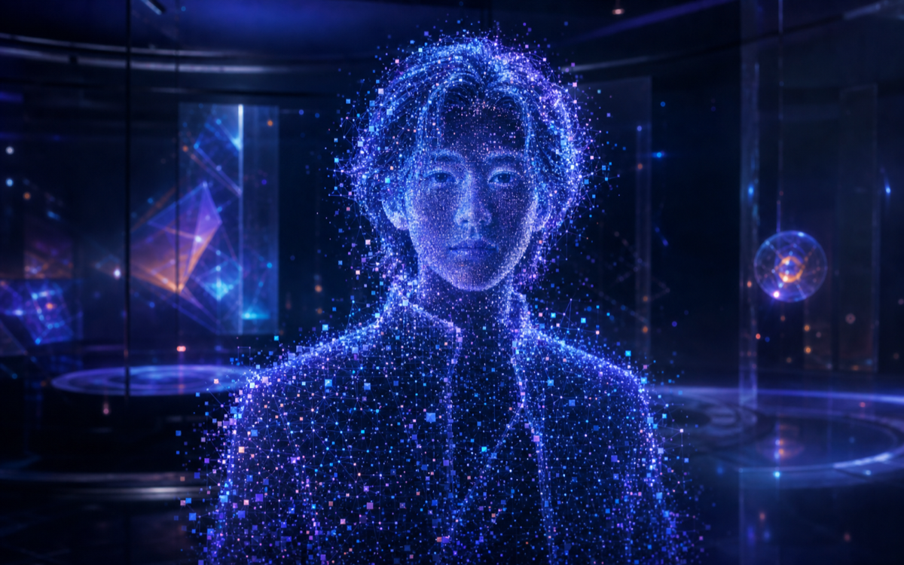

LIVE DIGITAL SELF基于动态画像与 1,842 位相似旅人经历 · 它不是预言，是一面镜子
「我是否要从交互设计师转为产品经理？」的三种可能 —— 先看一般情况，再看两端。
负责核心产品方向，影响重要决策
显著提升，进入行业中上水平
更忙，但成就感和掌控感强
笃定、自信，对未来更有掌控感
完成转型，独立负责项目
前期持平，后期有增长
学习和工作时间明显增加
成长感增强，压力也更大
转型未达预期，回到设计岗位
短期收入下降，恢复缓慢
焦虑、反复尝试，精力消耗大
失落、自我怀疑，动力下降
真实经历 · 已验证
读取你的动态画像……
万花筒会为你转出一位真实的旅人
标准量表、主题探索和你自己的话会分开记录。原始答案默认仅自己可见。
120题，从五个主要维度和三十个细分面向理解你的稳定倾向。
不测你是哪类人。只把精力、现实压力、支持与选择空间分开看，避免把一时的处境写成永久的性格。
选择关键词、换一批，也可以自己输入
30题官方移动版本 · 约5分钟
18题 Demo 构念版 · 约4分钟
20题 Demo 构念版 · 约5分钟
这些答案只描述当下，不会被写成永久人格。数字人会把它们与稳定倾向分开保存。